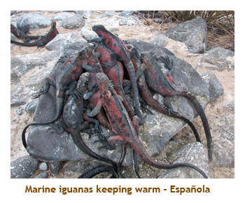

[ Home ] [ Travel ] [ Photography ] [ Pets ] [ Games] [ Rowing] [ Physics ]


Cruising on the Xpedition
Travel
Cruises
Past Cruises (Diaries)
Future Cruises
Rogues Galleries
Land Trips
Diaries (Land Trips)
Hawai'i - Big Island - 04'01
Hawai'i - Maui - 05'02
Hawai'i - Big Island - 04'03
Hawai'i - Kaua'i - 09'04
Hawai'i - Big Island - 04'06
Hawai'i - Maui - 04'06
Mainland China - 05'07
Phoenix, Arizona - 12'07
Greek Isles - 05'08
Hawai'i - Kaua'i - 09'08
Hawai'i - Big Island - 09'09
Hawai'i - Maui - 05'12
Hawai'i - Big Island - 04'13
Ireland - 08'13
Mexico - Cancun 11'13
France/Belgium/Lux 07'15
Hawai'i - Big Island - 05'17
England / Wales - 06'17
Hawai'i - Big Island - 09'19
Photography
Cameras
Underwater
Pets
Tara
Blackie
Whitey
Muffy
Ollie
Rusty
Fluffy
Rufus&Dufus
Games
Rowing
Physics
Rating (out of 5): Ship  Food
Service +
Itinerary +
Food
Service +
Itinerary +
We originally booked 2 cabins for the Galapagos as Chrissy and Mike were going to accompany us. However, when
it turned out that neither of the two ladies could get the time off of work, it became a "guy's cruise" with just Mike
and myself. The cruise came packaged with a 3 night Quito option. Because you have to fly through Quito to get
to the Galapagos, we decided to take the Quito package. It would be a first for both Mike and I - neither of us had
ever been to South America. I've included a section on the ship experience as this cruise was completely different
from anything we had ever experienced on HAL, Princess, RCI or Celebrity. As you will see, this turned out to be the
most amazing, and enjoyable cruise I've ever been on!
The Galapagos Cruise Experience
I normally focus my cruise diaries on the itinerary and what we did, and mention the ship and it's amenities only in passing. However, in this case the ship and shipboard experience is so unique that I thought it would be valuable to understand how this differs from the norms of the mass market cruise lines. If you're expecting a run of the mill "Caribbean cruise", you are in for a big shock!
 This is an Ecuadorian cruise. The Galapagos Islands are part of Ecuador.
The Celebity Xpedition is owned by Ecuador and operated by Celebrity. All of the staff, from the Captain to the chamber maids
and wait staff, are Ecuadorian. We found the staff to be friendly, efficient and just wonderful people.
The Galapagos Islands are protected within a National Park. One rule is that visitors must be accompanied at all times by a
Park Naturalist, with a ratio of up to 15 guests per naturalist. The Xpedition has a maximum capacity of 98 passengers
(94 double occupancy), so there are
seven naturalists aboard (when the ship is full).
Park naturalists are native Galapagons who have an extensive knowledge of the area. All of the
food served on board originates in Ecuador, with about 90% of it from the local islands. The food was wonderful with lots of choices
for each meal including seafood, beef and chicken. Note: the fruit juices were delicious - they were made by blending the entire
fruit, much like a smoothie.
This is an Ecuadorian cruise. The Galapagos Islands are part of Ecuador.
The Celebity Xpedition is owned by Ecuador and operated by Celebrity. All of the staff, from the Captain to the chamber maids
and wait staff, are Ecuadorian. We found the staff to be friendly, efficient and just wonderful people.
The Galapagos Islands are protected within a National Park. One rule is that visitors must be accompanied at all times by a
Park Naturalist, with a ratio of up to 15 guests per naturalist. The Xpedition has a maximum capacity of 98 passengers
(94 double occupancy), so there are
seven naturalists aboard (when the ship is full).
Park naturalists are native Galapagons who have an extensive knowledge of the area. All of the
food served on board originates in Ecuador, with about 90% of it from the local islands. The food was wonderful with lots of choices
for each meal including seafood, beef and chicken. Note: the fruit juices were delicious - they were made by blending the entire
fruit, much like a smoothie.
This is a busy, port intensive cruise. This cruise has no "at sea" days, and, in fact,
usually visits 2 ports each day. Each day was a full day. We would rise early each morning (5:30 AM to 6:30 AM
depending on the schedule) and do at least 2 excursions (up to 4!) lasting through to about 7 PM. The briefing for the next day's
ports and then eating dinner would fill in the rest of the evening until 10 PM or so.
The excursions were so interesting that there was no problem getting motivated for each adventure from the ship.
Do not attempt this cruise as a means to relax!
This cruise does not accommodate all ages and fitness levels.
The Galapagos experience is
not targeted to young children as the excursions are not stroller or baby friendly and there are no kids programs on board.
Likewise it would be a difficult cruise for people with mobility handicaps. However, anyone from their teens to
their 80's (as on our cruise!) that are relatively mobile can appreciate the cruise, especially if they are interested in
wildlife. All excursions are reached by Zodiac, so being able to get in and out of the Zodiac is a must.
Each excursion offers different levels of activity, from staying aboard the Zodiac to see the wildlife from the water through
to wet landings for easy or more challenging walks. The night before, you sign up for the level of activity you desire and
the groups are made up the next day and randomly assigned to each naturalist. The different activity levels obviously see
different terrain, but all see lots of wildlife and are equally interesting.
This is a small ship. The Xpedition has 6 decks and 47 passenger cabins. The
maximum capacity is 98 passengers, if all the larger suites have 3 people per. (Our cruise was not full and we had 74 passengers).
Hence, do not expect the same amenities you would find on a much larger ship. There is one main indoor dining area
(Darwin's Restaurant) that
offers a buffet breakfast and lunch and a menu dinner (no buffet at night). The dress code is always casual (no dress up nights!).
There is an alternate breakfast / lunch area outdoors at the Beagle Grill. They offer a different menu than the dining room,
featuring a continental breakfast and a pizza / hamburger type lunch. A couple of times dinner was served outdoors
under the stars, and the dining room was closed. Onboard entertainment consisted of a staff member (Jacobo) who played the
piano each evening from 7 PM to 7:45 PM and on one evening played the pan pipes. Two other special events were a
movie on one night and a local "folkloric" group that came aboard from Puerto Ayores on another night
(they were excellent). There is no swimming pool (just a hot tub), no casino
and minimal onboard shopping. Folks, the excursions are what this cruise is all about!
This
is truly an "all inclusive" cruise. The initial price of the
cruise seems a bit hefty, but everything is included. The excursions
are part of the cruise. There is no extra charge for any of them. All
alcoholic drinks are included. Beer and wine are served at each meal,
and mixed drinks are made to order. The bars opened at 6:30 AM and served
soda and juice as well. I got quite used to having wine at dinner, a draft
beer when returning from a warm excursion and a pina colada when we sat
in the lounge area. All tips are included and there is truly a "no tipping"
policy. At the end of the cruise there was no mention of any tipping and
no handing out of envelopes. Tipping does not exist on the Xpedition.
There is no place to spend any money aboard, other than a small shop selling
hats, t-shirts and toiletries. So, leave your money at home and just enjoy
the cruise! Note: There was one plea at the end of the cruise to make
a donation to the upkeep of the Galapagos National Park. BUT GET THIS!!!
For every dollar you donate, up to $250, Celebrity donates an equal amount
AND gives you a future cruise credit for the same amount. If you plan
on doing a Celebrity cruise in the future, your donation is "refunded"!
Who wouldn't donate the full $250?
Pre-cruise (Fri, Dec 8) - Travel to Quito
Mike and I headed to the airport late Thursday evening as our red-eye flight was leaving just after
midnight. We were flying AC to Toronto and then AA through Miami to Quito. The AC check-in
girl in Calgary told us to go to Terminal 2 in Toronto (we would arrive at Terminal 1) to pick up
our luggage to go through US customs. However, our luggage didn't show up at T2. We found
out that AA flights use Terminal 3. When we got to T3 we were informed that bags could take
up to 3 hours to arrive there. So we went and ate some lunch hoping we wouldn't miss our
connection to Miami. Fortunately our bags were there when we returned from lunch. When we
got to Miami, there was a storm at JFK that delayed our next leg by 3 hours. We finally made it
to the Quito airport at about 10 PM. By the time we went through customs, caught the bus to the
Marriott hotel and checked in it was about 11 PM. What a beautiful hotel. On our pillows were
live red roses. As we had now been up for about 40 hours straight,
we went straight to bed ready for a busy day touring Quito.
Pre-cruise (Sat, Dec 9) - A Day in Quito
We dragged ourselves out of bed and headed down to the buffet breakfast. The hotel was gorgeous. The restaurant was quite large including a waterfall and high ceilings. The buffet was great with lots of choice. There were some excellent "smoothie" fruit juices. After breakfast we met for the city tour at 9 AM. We headed off to the old part of town. Quito is a huge city, 42 miles long by 8 miles wide. It is above 9,000 feet and is home to 1.8 million people. We visited the Quito Cathedral, the Presidential Palace, some other cathedrals and a monastery. There were lots of native ladies (most with babies on their backs) selling scarves and linens. Kids were selling paintings and carved flutes. Lots of people everywhere.
Then we drove north of the city to a restaurant perched on the edge of a volcano crater. We had an excellent
lunch. We sat with Christopher and Ben who were to become good friends during the cruise. After lunch we
headed to the equator monument. The monument is 9 stories high and inside is a museum detailing the lives
of the various tribes of people living in rural Ecuador. Of course the tourist thing to do there is to take your
picture straddling the equator. There were some handicraft shops nearby and I bought Marj and Chrissy each
an alpaca wool teddy bear. Then we headed back to the hotel to get ready for dinner. Dinner was at Sucre's
Theatre Restaurant in the recently restored Opera House in the old part of town. The meal was excellent.
There was a large plaza outside the Opera House and a rock band was setting up. A young fellow was
singing some opera arias during our meal, but was drowned out when the band started up outside. Then
it was back to the hotel and to bed. Tomorrow was our departure for the Galapagos Islands.
Day 1 (Sun, Dec 10) - Baltra, North Seymour
We were up early to have another great breakfast at the hotel, and drop off our bags that we wouldn't need
until we returned. (Tame Airlines only allows one bag per person, and 30 lbs at that, so we just took the bare
necessities!) Our bags that we were taking with us had to be put out in the hallway by 8 AM, and we
wouldn't see them again until we boarded the ship. Then we were off to the airport for the flight to Baltra.
The flight was direct and took about 1 1/2 hours. Baltra is a small, very flat island. During WWII, the US developed
the airport as a military base. There is only the airport there (and a dock) , so passengers must meet a ship or ferry
to continue their trip. As we flew in to Baltra, we could see the harbour with lots of ships at anchor. The Celebrity
Xpedition was the largest ship there. Once we landed, we had to wait for about an hour and then were bused the
short distance to the dock. There was a sea lion basking on the dock - we were really in the Galapagos! We
were transported by Zodiac to the ship, in time for lunch. As we ate, we sailed a short distance to the island
of North Seymour.
After anchoring at North Seymour, we did a quick lifeboat drill and then headed off on our first excursion. The staff loaded about 14 people into each Zodiac and assigned a naturalist to each group. We had chosen the "high intensity" excursion. It was a circular, 2 km walk over sand, rocks and small boulders. The landing was a wet one (jumping out into knee deep water) so I was glad that I had brought my reef shoes. The walk was amazing. We saw sea lions (lots of babies!), lava gulls, frigate birds, land iguanas and blue footed boobies. None of the animals or birds had any fear of humans, so you could walk right up to them. The naturalist made it clear not to touch any of the animals, and our group was very respectful. We arrived back at the pickup point and were Zodiac'ed back to the ship by about 7 PM. Then it was the briefing for the next day followed by a great dinner. It was a wonderful first day!
Day 2 (Mon, Dec 11) - San Cristóbal, Española
We were up at 5:30 AM because we had to be breakfasted and ready for a 7 AM excursion to "Kicker Rock".
This is a huge rock formation just off the island of San Cristóbal. It was a Zodiac ride only as we circumnavigated
the rock. The rock shoots straight up out of the ocean to maybe 100 feet or so, so there was no place to land.
We saw seal lions swimming in the water and birds nesting in the crevices of the rock. Clinging to the cliffs we saw
blue footed boobies and masked (or Nazca) boobies. Then we headed back to the ship to get ready for the next
excursion at 9 AM.The second excursion was a dry landing at the town of Puerto Baquerizo Moreno (the
capital city of the Galapagos Islands) on San
Cristóbal Island. It was a small town of about 5,000 people. We were bused from there to an interpretation
center. The center had some great exhibits illustrating the history of the islands, plus lots of info on the wildlife.
After wandering around the center, we were bused back to the town for a visit. They were working on developing a
beautiful walkway along the beach, including a large scale model of the Galapagos Islands that would later be filled
with water. The beach was covered with sleepy sea lions. (I wondered how long it would be before the sea lions
discovered the island map water feature!) We walked down the main street
popping in to some tourist shops where I bought a couple of t-shirts. Then it was back to the ship for lunch.

During lunch the ship relocated to Española Island, ready for our afternoon excursion. At 1:30 there was
a session for snorkellers to get their equipment assigned for the cruise. At the back of the ship they had storage lockers
(with coat hangers sorted by cabin number) that we were to keep all our equipment in during the cruise. This worked great
and kept our cabin free of wetsuits and flippers! At 4 PM we were off on our "high intensity" excursion. This was a dry
landing at Point Suarez followed by a 3 km circular hike over small boulders. It was very overcast and rained for a part
of the hike. Wildlife was everywhere. We saw sea lions, marine iguanas
(a red variation), sally lightfoot crabs, lava lizards, mockingbirds,
white egrets, Galapagos hawks, masked boobies and blue footed boobies. At one point we hit a rocky ocean shore
(literally covered with sea birds) and
there was a huge blow hole. Each time a large wave hit the rocks, the blow hole would spout 40 or 50 feet into the air.
Awesome! Then it was back to the ship for the next day briefing and dinner. Another great day!
Day 3 (Tue, Dec 12) - Floreana
Today was a full day with 4 excursions. We got up early, breakfasted and headed off to an 8 AM wet landing
excursion at Cormorant Point on Floreana Island. After splashing onto the beach we headed inland and stopped
at a large brackish pond containing several large pink flamingos. This was our first sighting of the huge pink birds.
Also in the water we saw stilts, pintail ducks and a blue heron. We hiked on across an isthmus and arrived at a white
sandy beach. The beach was covered with large depressions where sea turtles had laid their eggs. In the water
we could see sea turtles swimming in the shallows. A lava bed jutting into the water was covered in Sally Lightfoot crabs.
What an amazing beach! We hiked back to the landing site and Zodiac'ed back to the ship in time for a 10:30 AM
snorkeling expedition. They took us to "Devil's Crown", a partially sunken volcanic cone where we swam in 20 to
30 foot depths. No sooner had we entered the water than I sighted a 6 to 8 foot White Tipped Reef Shark
right below me. That did wonders for my confidence! A bit further on we encountered a group of swimming sea lions.
They had a disconcerting habit of swimming straight at you and then swerving away at the last instant. For some
reason they would often flip over and swim right under you, looking at you upside down. There were schools of
colourful tropical fish everywhere. It was the best (and most unnerving) snorkeling I have ever done. There was
quite a current, so the Zodiac moved along with us so that we could just drift along and not worry about where we were
going. Amazing! Then it was back to the ship for lunch.
After lunch we headed off on another snorkel adventure at 2 PM. This was located at Champion Island. Again
it was a wonderful snorkel complete with Spotted Eagle Rays and more playful sea lions. The naturalist guide
was very comfortable with the seal lions. He swam down 15 feet or so and was doing rolls and flips with a
sea lion that was copying him. Then it was back to the ship again to join another excursion leaving at 4:15 PM
(see what I mean about busy days?). We did a wet landing at "Baroness Outlook" and climbed up to a
viewing platform. From there we could see much of Floreana Island and over to "Post Office Bay". That's where the famous
Floreana post office is located. Unfortunately our itineray did not include a visit to the PO. A month earlier, friends
Lynne and Frank (from the Sea Princess cruise) had been there and had left a postcard for me at the PO. I guess it's still there.
After the lookout, we piled back into the Zodiac and did a shoreline tour of mangrove trees and small rocky islands.
On one of the rocks we had our first sighting of Galapagos penguins. It was a wonderful excursion. Once again
we arrived back at the ship after 6 PM, ready for the daily briefing and dinner. Tonight was a "Sounds of
Silence" stargazing dinner out on deck, and the dining room was closed. It was warm and still - a beautiful
evening.
Day 4 (Wed, Dec 13) - Santa Cruz, Bartolomé
We didn't have to get up so early today as our excursion was at 9 AM. We were off to look for flamingos
near Las Bachas Beach. We hiked along a beautiful white sandy beach where we saw some large prickly pear cactus plants,
brown pelicans, a blue heron and lots of marine iguanas. We also saw green sea turtle nests in the sand. We headed a bit
inland to a large pond with several flamingos. The flamingos all had their heads buried in the water, sucking up the
pink brine shrimp that give them their pinkish colour. They use their feet to stir up the mud on the bottom, which releases the
shrimp into the water. We retraced our steps back to the landing site and caught the Zodiac back to the ship. After
lunch, we attended a lecture on sharks. Apparently due to the abundance of fish and other natural shark food in the water,
there has never been a shark attack on humans recorded in the Galapagos. This fact did little to comfort me when
I encountered them on our snorkelling trips. I didn't want to be the first!
After the lecture, we headed out on the 4 PM excursion. We opted for the "high intensity" activity where we
would hike up the volcano on Bartolomé Island to a height of 374 feet. This provided a view of 28 islands
(so they say) and the nearby Pinnacle Rock. The climb was fairly easy as it was mostly boardwalks and wooden steps. On the
way up we saw some lava cactus which only grows on the baren lava. While waiting for the Zodiac to pick us up, the
naturalist waded into waist deep water and sheparded some small (4 or 5 feet) sleeping sharks out from a cave into the open water
to where we could see them. Don't do this at home! Then we were on our way back to the ship at about 6:30 PM.
The path from the Zodiac loading/unloading area to our cabin fortuitively passes right by the Darwin Bar, so of course
we had to grab a draft beer to cool off from the hike. Then it was off to the briefing session and hitting the dining room for
another great dinner. About 10 PM we passed over the Equator. There was a celebration out on deck, but our (slow) table
was still eating, so we missed it. It sounded like the passengers had a lot of fun and the staff was all in costume. A great day!
Day 5 (Thur, Dec 14) - Isabela, Fernandina
We were up early again to prepare for an 8 AM excursion to the Mariela Islands (just off of Isabela). This was a
Zodiac ride through mangrove lagoons and rocky islands to look for the Galapagos penguins. It was very hot and
sunny today, a change from the cooler cloudy weather we had been having. As we motored slowly through a
mangrove lagoon, we saw lots of green sea turtles and a pair of spotted eagle rays. Then we cricled some rocks that
were home to several species of sea birds. We saw flightless cormorants, blue footed boobies, masked boobies, pelicans and
sea lions. Although this was a favorite haunt for penguins, we only saw 3 or 4 of them. Maybe they were off swimming or something.
The waters of Elizabeth Bay are unique in the Galapagos because of the Cromwell upwelling current. This keeps the water there
very cool, reaching down to the mid-50's. Brrr! However the penguins just love it.
We headed back to the ship where we were to leave for Fernandino Island at 11 AM. On the way we would watch for whales and
dolphins. I don't think that we saw any large sea creatures, but it was an interesting cruise between the islands. There was
a special buffet for lunch featuring Ecuadorian favorites - ceviches, muchines, empanadas, camarones, buñuelos,
etc. It was great.

After lunch, we lounged around waiting for our 4 PM excursion. I think a couple of piña coladas helped to
pass the time. We signed up for the "high Intensity" dry landing excursion at Espinoza Point on Fernandina Island.
We did an extended Zodiac ride to circle some rocks that were homes for flightless cormorants and Galapagos penguins.
After that we made a dry landing at a concrete dock. We walked over a large bed of A'a and Pahoehoe lava flows
towards a huge marine iguana colony. As well as marine iguana, we saw lots of Sally Lightfoot crabs, lava herons and
the skeleton of a large whale. It was a very interesting hike. We arrived back on the ship just before 7 PM.
Once again it was briefing time and then dinner. For the second time it was a "Sounds of Silence" dinner under the
stars. It was another warm and calm evening. For a special attraction , at 10:30 or so they turned on some bright lights
down onto the ocean. Before long there was a sea lion and several pelicans patrolling the water looking for attracted fish.
At one point the shimmery outline of a shark appeared as it circled around the lit up area. Flying fish occasionally
emerged from the water attracting skimming pelicans. All very eerie in the pitch black night and the lit up
area below. It was a real time display of Darwin's survival of the fittest.
Day 6 (Fri, Dec 15) - Santiago, Santa Cruz
This morning we were visiting Santiago Island. Our excursion was at 8:15 AM. It was a high intensity, wet landing at James
Bay. This is the site of Puerto Egas, a salt mining operation that closed in the 1960's. The hike was about 2 km, across
an inland trail and returning along the shore. The vegetation was mainly "Palo Santo" (holy stick) trees and prickly pear
cactus. The trees were still bare as the rainy season was just beginning. Another 2 weeks and everything would be
green and blooming. There were lots of finches and small birds, as well as carpenter bees and a large colourful
grasshopper. Returning along the shore we saw sea lions and pups, marine iguanas, Sally Lightfoot crabs,
lava herons, American oystercatchers and sandpipers, as well as our first and only sighting of Galapagos fur seals.
Despite their name, the fur seals are actually sea lions, not seals. Back at the landing site there was a Galapagos
hawk that let me walk right up to him. We had time for a quick snorkel so headed out into the ocean. There were
lots of schools of various fish and, of course, playful sea lions. Mike had the luck to swim over several sea lions
feeding in a school of fish.Then it was back to the ship for lunch.
After lunch we were treated to a cooking / bartending demo. We learned how to make "ceviche" plus a couple
of mixed drinks. Then there was a showing of an IMAX video of the Galapagos. During this time the ship was
repositioning to Santa Cruz Island. At 4 PM we had a wet landing hike at Dragon Hill on Santa Cruz. There was
an advanced snorkel on at the same time, but we decided to forego it for the hike (we had
snorkeled in the morning). The hike was a 2.5 km circular trail
around a volcanic hill that was home to the largest concentration of land iguanas in the islands. It was very hot
with little shade - too hot for the iguanas which were all hiding. We only saw one iguana along the entire trail (although
we could see recent tracks in the dirt). On the upside, the trail took us past a flamingo pond and there were several
of the large birds feeding there. We also saw a blue heron fishing along the shore. We arrived back at the ship after 6 PM
just in time for a draft beer. Then we went to the daily briefing and had dinner in the dining room. After dinner they showed
a movie (Cinderella Man) complete with popcorn and milkshakes. However, we were too tired and packed it in instead.
Day 7 (Sat, Dec 16) - Santa Cruz
Today we would be visiting the largest (human) population center on the islands - Puerto Ayora (about 12,000 people). This was the first day
that we stayed in one location for the entire day. For the morning, we opted for the "Highlands" excursion to see
the giant Galapagos tortoises. After Zodiac'ing to the town dock, we boarded a bus that took us up the mountain side
into the highlands. The vegetation changed from the arid lower levels into lush tropical jungle. The temperature dropped
as we went from sunshine to overcast and misty weather. We stopped at a "farm" where the grass and ponds were
maintained in their native state for the tortoises. We first visited a huge underground lava tube. There was a
barn owl sleeping on some roots hanging from the ceiling. Then we headed out into a large pasture where a number of
tortoises were lounging or feeding (I don't think they do much else!). The tortoises were huge. They seemed to
favour the shallow ponds where they could happily feed on water plants of various kinds. An outdoor eating area (for
humans) provided us a cup of tea and a wonderful view down to the ocean. The grassy trail was soaking wet from
the mist - quite different from the dry arid heat below. It was a nice respite from the hot sun.Then we were bused back into
town where we walked along the colourful main street. We passed a fish cleaning station (in use) which was packed with
pelicans vying for scraps. There was also a blue heron and a sea lion hoping for handouts. We boarded a Zodiac to go
back to the ship for lunch.
After lunch we headed back to town for our 3 PM excursion to the Charles Darwin Research Station. Here, biologists
raise tortoises (and land iguanas) for future release into the wilds. This is also the home of Lonesome George, the last
remaining individual of the Pinta Island subspecies. The station is only a short walk from town. It was very hot in the afternoon.
In retrospect, we should have done the station visit in the AM and the highlands hike in the PM. The cool, misty weather
would have been more welcome in the afternoon, and Lonesome George is typically only seen in the morning. By the
time we got to the station, George had moved into a shady area out of the sun. We could only see the shadow of his head.
However, the station was very interesting and there were tortoises of all ages. After touring through the station grounds, we
walked back to town. Lots of tourist shops line the main street. We did some window shopping and took our time strolling
back to the Zodiac dock. The last Zodiac was 7 PM, but we were there by about 6:30. Then it was back to the ship for
dinner. Just before dinner the captain held a farewell cocktail party. It had been a great cruise and we had made so
many friends with passengers, and with the staff and naturalists. The dinner was a BBQ meal served outdoors on deck.
Again it was a beautiful starlit evening. After dinner a family from Puerto Ayora came aboard
to entertain us with music and native dancing. It was wonderful. A great ending to a great cruise!
Day 8 (Sun, Dec 17) - Baltra, Quito
We were up early for our final breakfast. The ship had repositioned to Baltra and you could see the airport from the ship. It was sad to leave the ship that had been our home for 7 days. We Zodiac'ed to the dock and then were bused to the airport. The return flight to Quito would be about 3 hours as we had a stopover in Guayaquil (pronounced why-a-keel). Guayaquil is the largest city in Ecuador at 2.2 million people. Quito is second largest. We arrived at the Quito airport and were bused back to the Marriott hotel. We retrieved our stored luggage and dumped everything into our hotel room. We had lunch at the hotel and then headed off on a shopping excursion. The weather was heavy cloud and it was raining hard. We were taken to two markets. One was an upscale handicraft market that had beautiful, but expensive Ecuadorian handicrafts. I bought Mom a colourful alpaca wool scarf. Then we went to a huge flea market with many, many stalls selling t-shirts, scarves, table cloths, paintings, etc. The prices here were incredibly low but the quality of the merchandise was pretty good. I bought 2 colourful table cloths for $20, 3 scarves for $5 and 2 t-shirts for $10. The fellow selling the t-shirts didn't speak very good English. He told me that one t-shirt was $5. When I asked him how much for two, he said $11. I talked him down to two for $10. How's that for hard bargaining?
After shopping, we returned to the hotel for a wonderful dinner in the Presidential Suite on the top floor of the hotel.
It was a very nice dinner and an opportunity to say goodbye to all the friends we had made on the cruise. Then it was off to bed
early as our pickup time for the airport shuttle was 5 AM.
Post-cruise (Mon, Dec 18) - Return from Quito
Whoa! Up at 4 AM to have breakfast and be ready for our 5 AM pickup. The airport was quite crowded and we had some lineups for check-in and then going through customs. However, we finally made it to the boarding area in plenty of time for the flight. We were flying AA to Miami and then through Dallas to Calgary. All of the flights were on time. To spice things up, Mike and I played "Amazing Race" against Pete and Karen, another Galapagos cruise couple from Calgary. We tried to beat them to the departure gates at each terminal.
All in all it was a great cruise. Everything provided by Celebrity, from the hotel to the ship was absolutely wonderful. The service and food on the ship was top notch (hence 5+ stars!). The small ship experience was awesome and I really enjoyed meeting so many wonderful people. I think that this cruise attracts people that love wildlife, are ecology minded and enjoy the outdoors, so we were all of one mind. I am anxious to go back again with Marj so that she can share the same wonderful experience, and I certainly wouldn't complain to do it all over again!
One final note. Two months later as I transcribe this diary to the Web, I realize how different Quito is from the Galapagos Islands. Although they are both part of Ecuador, they couldn't be more different. Already in my memory they are two separate trips.